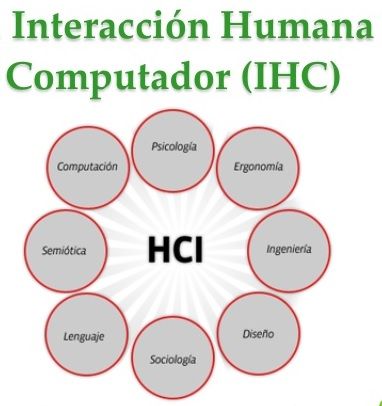

La interacción persona-computadora o persona-ordenador (IPO), es la disciplina encargada o dedicada a diseñar, evaluar e implementar sistemas informaticos que fueran interactivos para el ser humano. Lo que se desea es facilitar las cosas, ya sean para trabajar en conjunto, de manera sincronica y mucho mas fácil, funciona como un intercambio mediante software entre personas y computadoras, con fin de reducir errores. En este sitio encontrara todas y cada una de las caracteristicas que este tema aborda, y evaluara el conocimiento adquirido mediante el desarrollo de 2 actividades.
